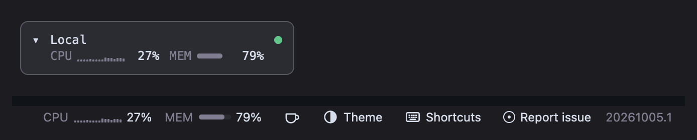

A field guide · Edition of November 2026
Run a team of coding agents from one native window.
Sheprd is an open-source desktop app for macOS, Linux and Windows. It keeps every agent, worktree, machine and pull request in one place, then helps you review, checkpoint and ship what they produce, and follow them from your phone.

Prologue
Somewhere between the second and the fifth agent, the terminal stops being enough. One agent is waiting on a question, another finished an hour ago, a third is quietly burning through your weekly plan, and the branch you need to review is in a worktree whose name you no longer remember.
Sheprd is written for that moment. It does not replace your agents or your editor. It gives them a place to live: native terminals for every agent CLI you already use, a sidebar that knows which worktree each one is in, and the tools to turn their work into pull requests you trust.
Chapter I
Morning triage
Before you type anything, find out what needs you.
The Overview gathers agents that are waiting on you, runs that failed and work that finished while you were away. Snooze what can wait, pin what cannot, reopen a finished Claude, Codex or opencode session where it stopped.
The status bar answers the two questions that follow: how much plan do I have left, and which machine is free. Plan usage covers more than 85 AI services and shows the one closest to its limit; CPU, memory and disk are read for every machine, over SSH for remote ones.


Chapter II
From issue to agent
An issue is a prompt with a branch name waiting to happen.
The Issues section lists open issues from GitHub, GitLab and Beads across every repository in the window. Pick one and choose Dispatch agent: an agent, a model, a branch name. Sheprd creates a worktree, starts the agent in it and puts the new row under its repository, status dot and all.
- Pick an issue, or a pull request to check out, from the orchestrator.
- Dispatch Claude Code, Codex or any agent CLI into a fresh worktree.
- Spread the load: Smart Dispatch ranks connected machines by spare cores and creates the worktree on the best one.
- Compare with Fan-out: one prompt across several agents and machines; keep the best result, the rest are cleaned up.
Smart Dispatch, Fan-out and Teleport run from macOS and Linux clients today.
“Every agent turn leaves a checkpoint behind, so a bad turn costs you a click, not an afternoon.”
That is the quiet feature underneath: agent checkpoints. Each time an agent starts or finishes a turn, Sheprd snapshots the worktree into hidden Git refs, the newest fifty per branch. Diff any of them; restore one from the workspace menu or the command line.
Chapter III
Reading what they wrote
Review like a pull request, before there is a pull request.

Review Changes shows uncommitted or branch changes as a diff: unified or side by side, a file tree, word-level highlights, viewed marks. Notes collect in a panel and go back to the agent that wrote the code.
When it is right, the title-bar Git menu commits, pushes, opens the pull request and, later, merges it. Each worktree row shows its PR, colored by checks, reviews and merge state.
Previews get the same treatment. Agents open their pages in a browser tab beside the terminal; you pin notes to elements, selected text or regions, and send them back.

Chapter IV
Machines, near and far
Run agents where the cores are.
Saved SSH machines sit in the same sidebar as your laptop, with one shared login per host. On Windows, WSL distributions appear as devices of their own. Containers give each agent an isolated box built from your project's image; Coder workspaces and Azure machines can be created as devices from Settings.
Teleport moves a worktree, with its commits, uncommitted changes, tabs, running programs and agent sessions, to another machine, and back. Listening ports appear as chips on each workspace and are tunnelled home on click.
Cloud devices and Teleport run from macOS and Linux clients. Daytona, Fly Sprites, Boat, Railway and OpenSandbox are experimental.

Chapter V
Away from the desk
The agent has a question. You are in line for coffee.
Turn on remote control and your computer serves a small web app to your phone: chats, questions waiting for an answer, push notifications. Pairing is approved on both screens, with a QR code, a matching code and an Allow on the desktop, and runs over its own certificate authority on your LAN or Tailscale. Approving a phone once enrols it on the SSH and cloud machines your computer uses.
A native iPhone and iPad app is in TestFlight beta, with an Apple Watch companion, widgets and Live Activities still experimental. Android uses the web app.
- Any phone browser
- Opt-in Remote-control web app
- iPhone & iPad
- TestFlight beta Native app, iOS 26
- Watch, widgets
- Experimental In TestFlight builds
Interlude
Making it yours
Hundreds of themes, Ghostty's included, with live preview. Sidebar layouts from comfortable to minimal, seven tab styles, four font roles, a shortcuts editor.
Past appearance: mods in sandboxed Luau add status items, sidebar sections or whole apps and reload as you save. Automations run scheduled Luau jobs that pull, test and start agents, only after you approve the exact script. And a command line of about sixty commands lets your agents open pages, read your notes and take checkpoints themselves.